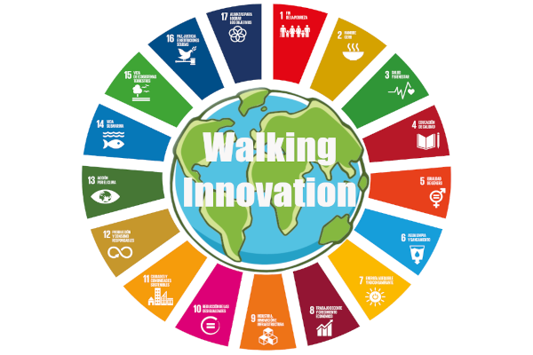

Promovendo saúde, trabalho digno e consumo responsável, transformamos o presente para garantir um futuro sustentável.

Os Objetivos de Desenvolvimento Sustentável são uma série de 17 metas estabelecidas pela ONU para promover um mundo mais justo e equilibrado até 2030. Aborda questões como erradicação da pobreza, saúde e bem estar, educação de qualidade e proteção ambiental. A ideia é que todos os países, independentemente do seu desenvolvimento, trabalhem juntos para alcançar esses objetivos e melhorar a vida de todos, garantindo um futuro sustentável e inclusivo.

Saúde e bem-estar: a base de um futuro sustentável.

Trabalho digno: o caminho para o crescimento sustentável.

Consumo responsável: construindo um futuro sustentável